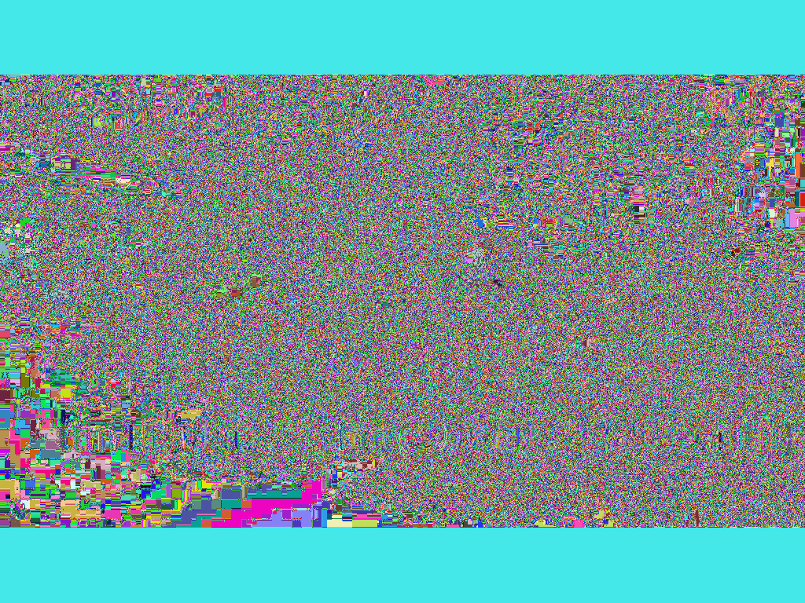
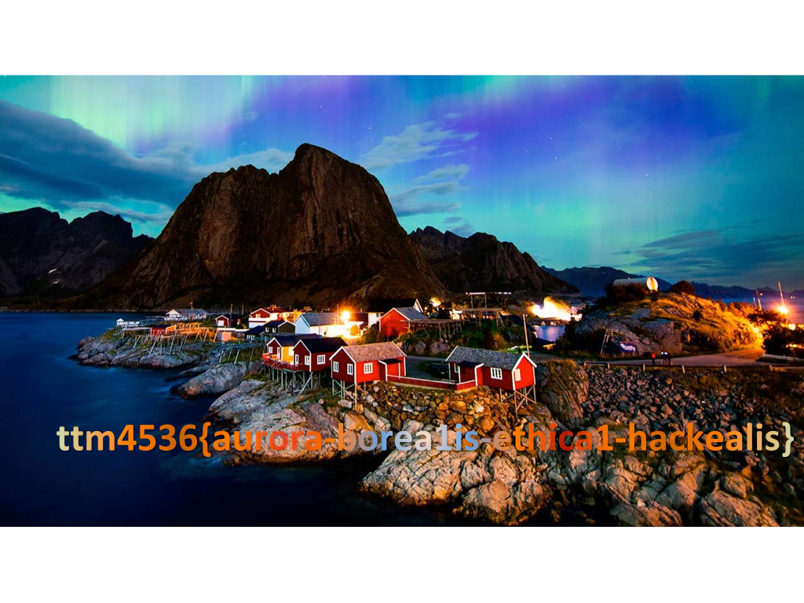

Challenge: Malaisia Student name: Nam Xuan Nguyen Student ID:
A picture and a Python code are provided. 
from PIL import Image
import random
import sys
def qq(x, y):
return (2 * x + 3 * y + 29) % 256
def transform(pixelinfo):
pixelreverse = [pixelinfo[len(pixelinfo)-1-i] for i in range(len(pixelinfo))]
out = [pixelinfo[i] for i in range(len(pixelinfo))]
for i in range(len(pixelinfo)):
out[0] = qq(pixelreverse[i], out[0])
for j in range(1,len(pixelinfo)):
out[j] = qq(out[j-1], out[j])
return out
image = Image.open(sys.argv[1])
outfile1 = Image.new(image.mode, image.size)
for x in range(0, image.size[0]):
for y in range(0, image.size[1]):
sourcepixel = list(image.getpixel((x, y)))
tran = transform(sourcepixel)
outfile1.putpixel((x, y), tuple(tran))
outfile1.save('out1.bmp')It is easy to see that this picture is the result of an tranformation using the script. So our target is to reverse this transformation to find the original picture.
We need to build an inverse function of the above transformation. . The format of this picture is bmp, that means each pixel includes 3 values (R, G, B) in which R, G, B go from 0 to 255. Therefore, if we build an 3-dimension array and each member has the size of 1 byte, so it requires 256^3 * 256^3 byte = 64MB. Each item of this array at position [a, b, c] is the origin pixel of pixel (a,b,c). As the required memory is quite small, it is posible to use this solution.
This is the Python code that I used to reverse the picture
from PIL import Image
import random
import sys
def qq(x, y):
return (2 * x + 3 * y + 29) % 256
def transform(pixelinfo):
pixelreverse = [pixelinfo[len(pixelinfo)-1-i] for i in range(len(pixelinfo))]
out = [pixelinfo[i] for i in range(len(pixelinfo))]
for i in range(len(pixelinfo)):
out[0] = qq(pixelreverse[i], out[0])
for j in range(1,len(pixelinfo)):
out[j] = qq(out[j-1], out[j])
return out
image = Image.open(sys.argv[1])
outfile1 = Image.new(image.mode, image.size)
# My code start from here
listReverse=[[]]*256*256*256
hundred=256*256
ten=256
for x in range(0, 256):
for y in range(0, 256):
for z in range(0, 256):
sourcepixel = [x,y,z]
tran = transform(sourcepixel)
listReverse[tran[0]*hundred+tran[1]*ten+tran[2]]=sourcepixel
for x in range(0, image.size[0]):
for y in range(0, image.size[1]):
sourcepixel = list(image.getpixel((x, y)))
tran = listReverse[sourcepixel[0]*hundred + sourcepixel[1]*ten+sourcepixel[2]]
outfile1.putpixel((x, y), tuple(tran))
outfile1.save('out1.bmp')The first step is to prepare the array. I ran 3 nested for loops with indexes x, y, z. With each pixel (x, y, z), I found the its trasformation pixel,(tR, tG, tB) then assigning (x, y, z) to an item of the array at position (tR, tG, tB) because (x, y, z) is converted to (tR, tG, tB).
After finishing the array, I ran two nested for loops to go through all positions in the picture. At the position (x, y), I got the pixel value, looked up on the array to get the original pixel, and put it back to that position in the output picture.
The output picture is the original one, containing the flag.
In my code, I avoided to use 3-dimension array. Insteadly, I used a 1-dimension array having 256^3 items. I converted the index (a, b, c) to 256^2 * a + 256 * b + c = d and used d as the index in my array.
The flag is in this picture 